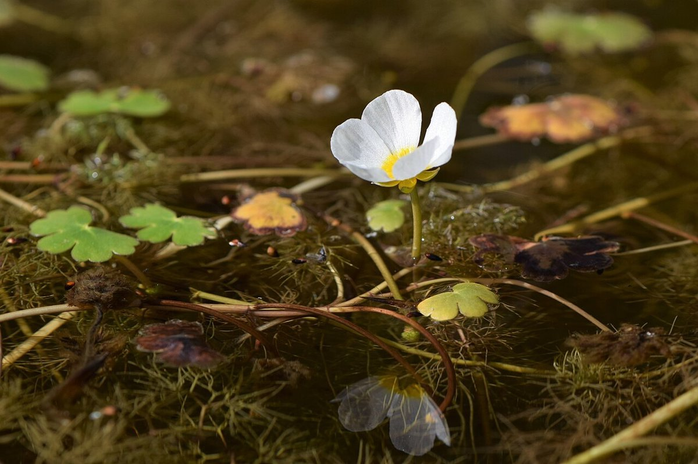
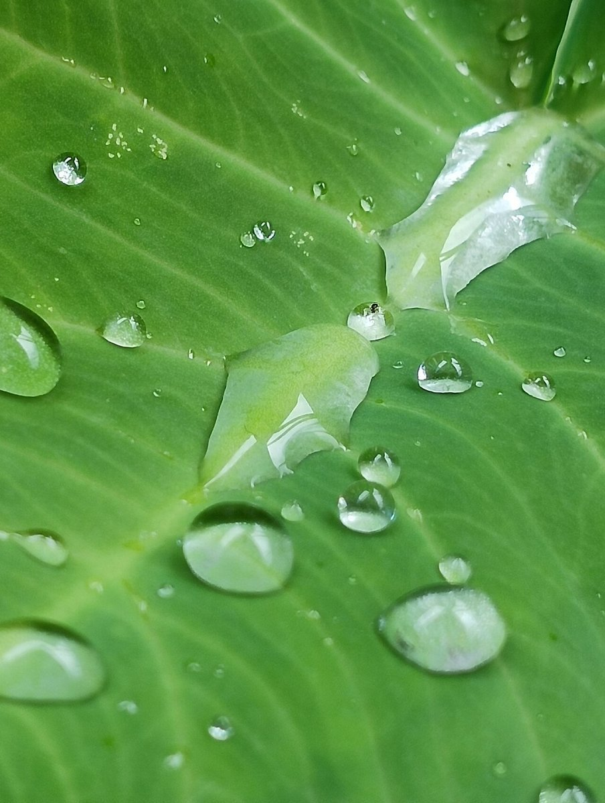

このページの口コミは、お店の実際の声ではありません。サイトイメージをつかんでいただくための創作例です。
口コミ
口コミ(イメージ例)
公開時に実際のお客様の声を掲載する場合のレイアウトを、創作の例文でお見せしています。

イメージ例お店の中が落ち着いた雰囲気で、ゆったりとした気持ちで過ごすことができました。時間を忘れて、ほっと一息つけるひとときでした。
イメージ例来店する前に電話で相談できたので、安心して伺うことができました。聞きたいことを丁寧に聞いていただけて助かりました。
イメージ例仕上がりに満足して、帰り道の気分が明るくなりました。また足を運びたいと思える時間でした。
